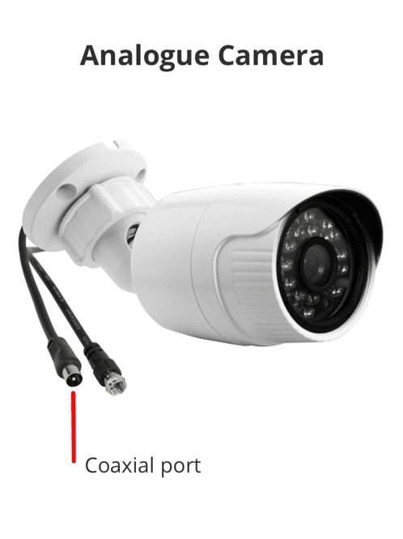
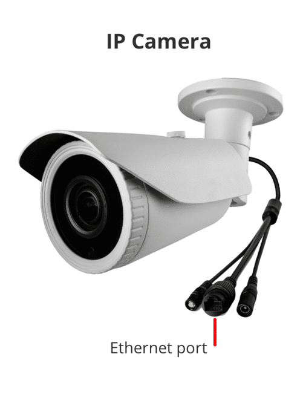
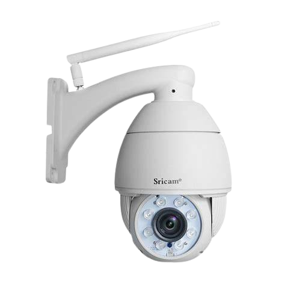

Apa itu CCTV?
CCTV (Closed-Circuit Television) adalah sebuah kamera video yang meneruskan sinyal pada lokasi spesifik ke sejumlah monitor.
CCTV memiliki sistem closed-loop di mana penayangan video dilakukan secara tertutup atau terbatas, berbeda dengan televisi di mana tayangan ditampilkan sebagai siaran publik.
Penggunaan CCTV umumnya adalah untuk tujuan keamanan.
Teknologi CCTV pertama kali dikembangkan pada tahun 1949 di Amerika Serikat.
Sistem awal CCTV memerlukan pemantauan 24/7 karena tidak mampu merekam dan menyimpan informasi, sehingga operator harus melakukan pengawasan secara manual.
Kamera CCTV digunakan untuk mengawasi area tertentu secara otomatis tanpa perlu adanya petugas yang berjaga.
Selain dapat digunakan untuk mengintai dengan menampilkan kejadian pada area yang diawasi, CCTV juga dapat merekam kejadian di sekitarnya.
Pengawasan menggunakan CCTV umum digunakan pada berbagai tempat publik, seperti perusahaan, sekolah, restoran, bahkan pada rumah.
Fungsi CCTV
CCTV berfungsi untuk melakukan pengawasan pada suatu area, biasanya untuk tujuan keamanan.
Adanya CCTV pada area tertentu dapat mencegah terjadinya tindak kriminal.
Salah satu keunggulan yang ditawarkan CCTV adalah rekaman langsung mengenai suatu kejadian.
Rekaman ini dapat menjadi bukti saat terjadi suatu kejahatan, membantu melacak dan mengkonfirmasi pelaku, dan sebagainya.
Kamera CCTV juga banyak digunakan untuk memonitor lalu lintas kendaraan serta mengintai arus transportasi, terutama pada jalan yang rawan kecelakaan.
Cara Kerja CCTV
Cara kerja CCTV berbeda tergantung jenis kamera yang digunakan.
Kamera CCTV jenis analog memerlukan memori untuk menyimpan rekaman video.
Sedangkan, kamera CCTV IP sudah terhubung ke internet sehingga penyimpanan video terjadi secara otomatis ke sistem cloud tanpa memerlukan memori.
Jenis CCTV
CCTV Analog
Kamera pada CCTV analog merupakan teknologi lama yang bekerja dengan cara manual, yaitu menyimpan video yang terekam ke memori.
CCTV analog memiliki sistem yang lebih sederhana dan harga yang lebih terjangkau.
Kekurangan CCTV analog adalah video yang tersimpan rawan hilang karena bisa dicuri.
CCTV IP Camera
CCTV dengan IP Camera merupakan teknologi baru yang memiliki keunggulan dari segi penyimpanan yang fleksibel.
CCTV jenis ini terkoneksi ke internet, sehingga video disimpan secara lebih aman tanpa risiko hilang akibat dicuri
Kelebihan lain yang ditawarkan IP Camera adalah rekaman dengan gambar yang lebih jelas karena kamera memiliki resolusi yang lebih tinggi.
Namun, dibandingkan CCTV analog, jenis CCTV IP Camera memiliki harga yang lebih mahal.
CCTV Wireless
CCTV wireless (Closed-Circuit Television wireless) adalah sistem pengawasan video yang menggunakan teknologi nirkabel untuk mengirimkan sinyal video dari kamera ke perangkat penerima, seperti monitor atau penyimpanan data.
Keuntungan dari jenis CCTV ini adalah tidak perlu menggunakan kabel panjang seperti CCTV pada umumnya, sehingga pemasangannya lebih mudah. Selain itu, kamera ini memungkinkan pengguna memantau area yang sulit dijangkau dengan kabel yang sangat panjang, seperti luar rumah, garasi, atau atap.
Sistem CCTV
Sistem CCTV terdiri dari sejumlah instrumen yang bekerjasama untuk melakukan pengawasan, yaitu: